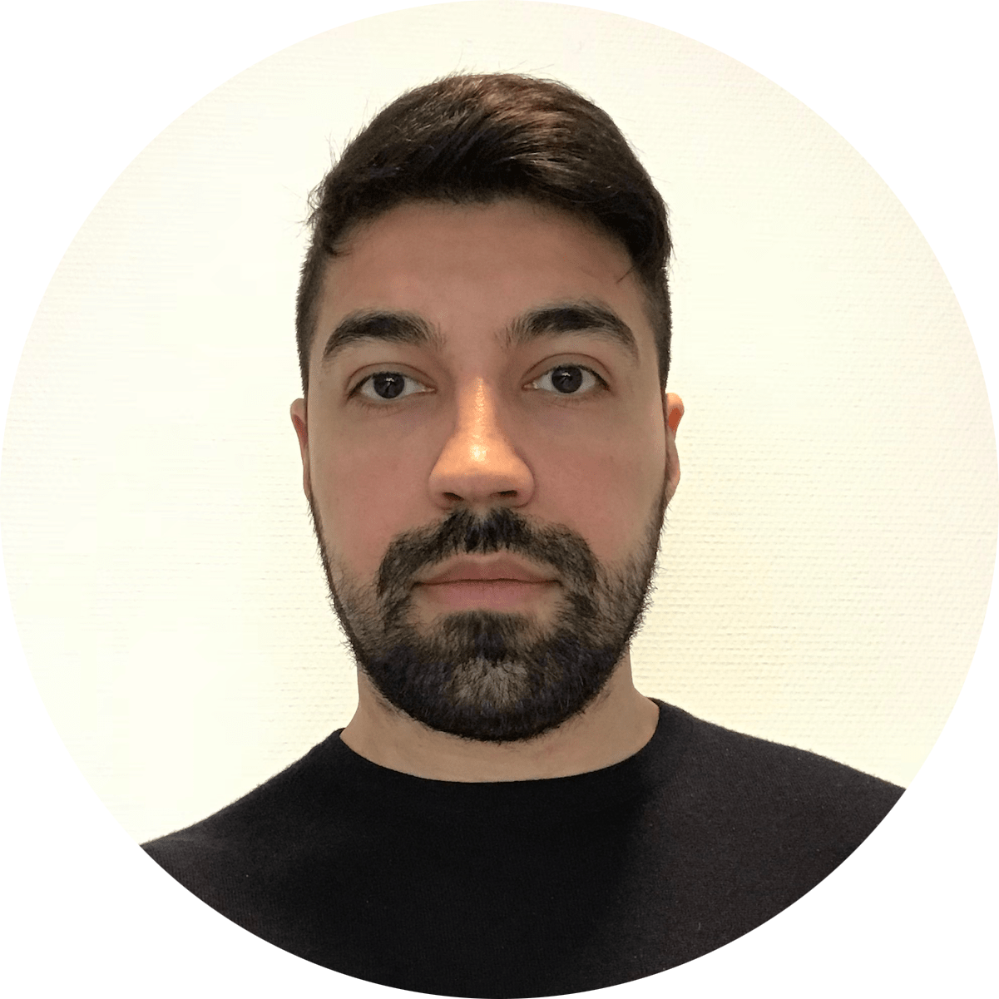

|  |
Zaland BahramzyA focused, result-oriented, and responsible person with high goals for personal development. Willing to work hard and take the necessary risks to achieve the proposed targets. Very keen on learning new things and a quick learner with the capability to adapt to new situations. A creative person, who brings a fresh perspective to his work, has an ambitious plan for his career and works hard to achieve goals. |
| Dates | Work |
|---|---|
| September 2020-Present | Salesperson at Elgiganten, Taastrup |
| January 2018-May 2020 | Student Assistant at Infineon Technologies, Herlev |
| January-April 2018 | Special Course: Low-Voltage Multilevel Boost Converter at Infineon Technologies, Herlev |
| December 2015-December 2017 | Student Assistant at GN ReSound, Ballerup |
| September-November 2015 | Bachelor's thesis: Future Digital TV and Mobile Phone Antenna at Boxer A/S, København |
| March-August 2015 | Internship at Boxer A/S, København |
| Java | ⭐️⭐️⭐️⭐️⭐️ | C# | ⭐️⭐️⭐️⭐️⭐️ |
| MySQL | ⭐️⭐️⭐️⭐️⭐️ | HTML | ⭐️⭐️⭐️⭐️⭐️ |
| CSS | ⭐️⭐️⭐️⭐️⭐️ | JavaScript | ⭐️⭐️⭐️⭐️⭐️ |